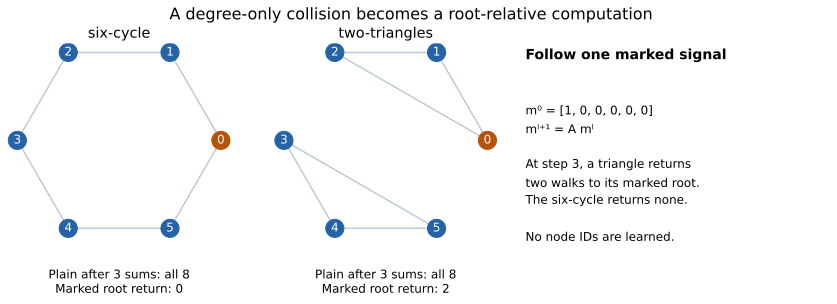
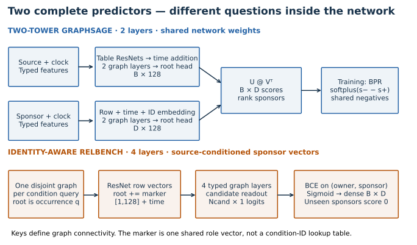
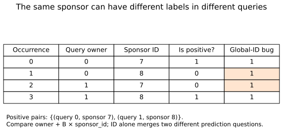
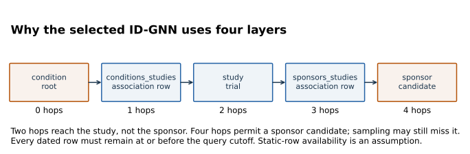
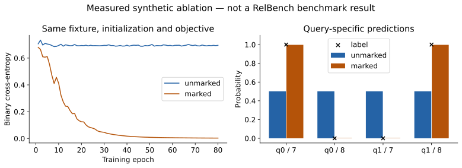

Year 4 · Quarter 2 · Lesson 132
Identity-aware message passing: who is asking?
See the idea · then trace the details
Identity-aware messages: mark the query’s role
The same database neighborhood can be interpreted relative to different targets.
1Extract a rooted neighborhood
Task entity → sampled computation graph
The task identifies a root. Neighborhood sampling decides which database records can participate.
2Mark the target identity
Give the root a distinct input signal
An identity signal tells the message-passing network which node is the current target instead of relying only on its ordinary attributes.
3Propagate and read the root
Identity-aware states → root representation
Messages can now depend on the target’s role. The root readout produces the task prediction.
Pause and predict: What ambiguity can remain when the root looks exactly like another node?
Without a role signal, an otherwise symmetric computation may fail to distinguish which node the task refers to.
Answer: Without a role signal, an otherwise symmetric computation may fail to distinguish which node the task refers to.
The question this lesson answers¶
How can the same sponsor receive a different representation depending on which condition we are asking about? In Lesson 131, you traced rows through encoders, graph layers and a root head. Recommendation changes the question: now one source query must rank many destination entities. We need to preserve who is asking while messages travel through the graph.
Your deliverable is a variant comparison with a defensible explanation: trace the root marker, implement labels that retain query ownership, and distinguish a controlled mechanism experiment from a published benchmark comparison. This serves the course mission: determine which relational information a model can use before claiming that its benchmark score demonstrates an advantage.
Student lab · Executed solution · Reference · Reproduction protocol
Read first. You et al., Identity-aware Graph Neural Networks motivates identity-aware message passing. RelBench v1 §3, Tables 5/8 and Appendix B.2 specifies the recommendation experiment. Read the pinned Model beside these papers: the conceptual family and this implementation are not identical.
Route. Spend about 35–45 minutes on the walkthrough and predictions, then complete the three notebook functions. The default notebook executes a small complete neural fixture and its paired ablation. The full-data training gate is separate, uses pinned sources, and writes fresh evidence. Ask the teaching agent about any step you cannot explain without looking at the code.
1 · A collision that more ordinary layers cannot resolve¶
In plain terms. If every node starts the same and always receives the same kinds of messages, it stays the same. More repetitions do not invent a distinguishing signal.
Recall L088, graph classification: a message-passing network combines a node’s current vector with a permutation-invariant aggregate of neighbor vectors. The 1-WL test repeatedly refines node colors using the multiset of neighbor colors. Standard message-passing networks are bounded by this test under the usual feature and aggregation assumptions. This is an expressiveness statement, not a claim that every implemented GNN attains the bound.
Worked example. Compare a six-cycle with two disconnected triangles. Both contain six nodes, and every node has degree two. Give every node the scalar feature 1. Use the deliberately simple rule h_next = A @ h, where A is the adjacency matrix. After one round every node is 2; after two, 4; after three, 8. More rounds keep the collision. The disconnected example makes the mechanism visible; a particular network may distinguish other graph pairs with richer initial features.


Now give one chosen root the signal 1 and every other node 0. Propagate that signal by the same sums. After three steps, the root of a triangle receives two returned walks: clockwise and anticlockwise. The root in the six-cycle receives none. Nothing learned a permanent ID for node 0. The computation knows which node is the current root.
Predict before moving the control. At one step, should the marked root receive anything back? At two steps, can this example distinguish the graphs? Write both answers, then inspect the intermediate node values.
This is a counting witness, not a trained ID-GNN result. It establishes that root-relative information can expose structure erased by the unmarked calculation. It does not establish that a learned model will exploit that information on any particular dataset.
2 · Three meanings of identity that must stay separate¶
A table type says what kind of row a node represents: condition, study or sponsor. A global ID embedding assigns a separate trainable vector to each known database entity. A root marker uses one shared vector to say “this occurrence is the source of this query.” These are three different parameter-sharing decisions.
The original ID-GNN paper assigns different message-function parameters to messages from the root and other nodes inside an ego network. An ego network is the neighborhood extracted around a chosen root. The pinned RelBench variant instead adds one learned vector before ordinary typed GraphSAGE propagation. Here identity-aware message passing (IDMP) describes the family of root-conditioned computations; it is not a claim that RelBench releases a separate model named IDMP.
Worked example. A condition vector is [2, −1]; the shared root marker is [0.5, 0.25]. Its root occurrence becomes [2.5, −0.75]. An occurrence of that same database condition used merely as context keeps [2, −1]. The model conditions on the role of the occurrence, not the spelling or numeric magnitude of a primary key.
encoded root occurrences [B,d] + shared marker [1,d]
encoded context occurrences [N−B,d] remain unchanged
TODO 1 — mark_roots. Add the shared [1,d] marker to the first B encoded root occurrences. Preserve all context rows, avoid mutating the input tensor, and keep the gradient path. The loader’s root-first convention is part of this function’s contract. If there are B roots, a sum over all output coordinates must send B units of gradient to each marker coordinate.
A table-specific encoder already distinguishes conditions from sponsors. Marking every condition row therefore adds no information about which condition is the query. Likewise, replacing the marker with an embedding lookup changes the model: now every condition ID has separate parameters and unseen IDs need a policy.
3 · Model architecture: two complete recommendation systems¶
The selected task asks which sponsors will run trials for a condition during the next 365 days. The released task table contains a condition ID, a cutoff and a set of future sponsor IDs. Those future IDs are supervision; they must not be inserted as prediction-time edges. See the released SQL task.


Diagram trace. Compare shared two-tower vectors with source-conditioned candidate vectors. Where is the root marker added, and how is each candidate tied to its query? On a narrow screen, scroll the figure sideways.
Two-tower GraphSAGE¶
The network encodes a source neighborhood into a 128-dimensional vector u and a destination neighborhood into a 128-dimensional vector v. Both towers use the same model parameters; the inputs and chosen root table differ. The destination path also adds a trainable embedding for each known sponsor ID in the pinned default. The score is the inner product u · v.
At inference, stack B condition vectors as U and D sponsor vectors as V. U @ V.T produces a [B,D] score matrix. Sponsor vectors can be shared across source queries evaluated at the same cutoff. This is efficient, but a sponsor vector itself does not change with the particular source condition.
Training. Bayesian Personalized Ranking (BPR) compares a positive sponsor with sampled negatives. The loss is softplus(negative_score − positive_score). The released share_same_time=True path shares negative examples among queries at a common time. The purpose is to rank positives above negatives; the score is not automatically a calibrated probability.
The released timestamp sampler drops each timestamp group’s incomplete minibatch. On this task that means 62 × 512 = 31,744 query draws per epoch from the 36,934 available training queries. The omitted subset changes with shuffling. A full released schedule therefore does not mean every training query is visited in every epoch. We preserve this behavior and expose it.
RelBench’s identity-aware variant¶
For each condition query, extract a disjoint temporal neighborhood. Encode typed columns into 128-dimensional row vectors. Add the root marker, then query-relative time encodings. Pass messages through four typed GraphSAGE layers. Apply a scalar head to all sampled sponsor occurrences, not to the condition root. The sponsor vector is now conditioned on the marked source in its own sampled graph.
Training. Each sampled sponsor occurrence gets a binary label defined by its (query owner, sponsor ID) pair. Binary cross-entropy (BCE) trains its logit. At evaluation, the released implementation initializes a [B,D] matrix to zero, writes sigmoid scores for sampled sponsors, and takes the top 10. Unsampled sponsors retain zero. When fewer than ten candidates are scored, zero-score ties can enter the list; preserving this behavior matters for source fidelity.
Open the identity-aware forward pass¶
Each relation applies a sum-GraphSAGE transform to neighbor vectors and a transform to the receiving node’s own vector. The implementation sums outputs over incoming relation types, then applies node-wise LayerNorm and ReLU. Repeating these operations transports the root signal along typed paths. The root marker is added once before propagation, not re-added at every layer.
def identity_forward(model,batch,source_type,destination_type,marker_enabled=True):
"""Same ordering as the released forward_dst_readout; only the marker is switchable."""
if model.id_awareness_emb is None:raise ValueError('Model needs identity awareness')
seed_time=batch[source_type].seed_time
x=model.encoder(batch.tf_dict)
if marker_enabled:x[source_type]=mark_roots(x[source_type],len(seed_time),model.id_awareness_emb.weight)
time=model.temporal_encoder(seed_time,batch.time_dict,batch.batch_dict)
for kind,value in time.items():x[kind]=x[kind]+value
for kind,embedding in model.embedding_dict.items():x[kind]=x[kind]+embedding(batch[kind].n_id)
x=model.gnn(x,batch.edge_index_dict)
return model.head(x[destination_type])
Read this in execution order. batch.tf_dict contains typed table features; batch.batch_dict assigns every occurrence to a query clock; batch.edge_index_dict supplies typed edges. The return value contains one logit per sampled sponsor occurrence. The same sponsor ID may appear in several rows because each query owns its own computation.
The complete benchmark comparison changes the loss, prediction head, destination embeddings, sampling paths and—on this task—depth. Treat its score difference as a comparison of systems. Section 6 supplies a smaller experiment in which only the marker switch changes.
4 · One sponsor, two query owners¶
In plain terms. “Sponsor 7 is positive” is incomplete. Positive for which condition and cutoff?
A disjoint minibatch repeats database rows as occurrences when several queries need them. n_id identifies the database row; batch identifies the query owning the occurrence. input_id maps the query back to its task-table row. These indices are not interchangeable.
Worked example. Query 0’s positive set is {7}. Query 1’s positive set is {8}. The sampled sponsor occurrences are (0,7), (0,8), (1,7), (1,8). Correct labels are [1,0,0,1]. Taking membership in the union {7,8} instead labels all four positive and trains on false relationships.


The source uses the integer key owner + B * sponsor_id. Because owners range from 0 through B−1 and sponsor IDs are nonnegative integers, different pairs have different keys. The batch size is the radix, not the global number of conditions. Integer overflow would invalidate the argument; the tiny indices here and the dataset’s int64 keys stay far below that limit.
TODO 2 — candidate_targets. Construct query-owned membership labels, validate shapes and owner bounds, and return float labels for BCE. Both the immediate CHECK and the actual small neural training loop call your function.
Moving a sponsor occurrence between query owners must change its label when the owners’ target sets differ. Renaming sponsor IDs consistently in predictions and truth must leave MAP unchanged. These are useful behavioral tests because they express invariants rather than merely re-running the implementation.
5 · Four layers are a reachability requirement¶
Why does this ID-GNN use four layers while the two-tower model uses two? A condition and a sponsor are linked through association rows and a study. The condition-centric computation must actually reach a sponsor occurrence before a sponsor head can score it.


The path is condition → conditions_studies → study → sponsors_studies → sponsor. Two layers stop at the study. Four layers make the destination reachable. The two-tower model can encode the condition and sponsor separately and compare their vectors; it does not need a sponsor inside the condition’s sampled graph to form a score.
Reachability is necessary but not sufficient. Fanout sampling may omit a useful route. The released fanouts halve by layer, giving [128,64,32,16] for the four-layer path, even though the paper’s table summarizes the neighbor count as 128. The paper specifies uniform temporal sampling; the released ID-GNN CLI defaults to last. Our experiment explicitly passes uniform and records that choice.
The cutoff belongs to the original query at every hop. A date-filtered path does not establish real ingestion-time validity when arrival timestamps or mutable-row histories are absent. Static tables similarly carry an availability assumption. Root identity does not fix these temporal limitations.
CHECK your explanation. If no sponsor is sampled, will adding a larger root marker solve the problem? No: it changes the vector of a present node, not which destination nodes exist in the computation. Increasing depth or changing sampling is a different intervention.
6 · A controlled experiment you can execute completely¶
We construct two disjoint condition queries with four sponsor occurrences. All row features are constant. The root of each query connects to its positive sponsor; a context condition connects to the other sponsor. Without a root marker, the occurrences look the same to the network. With the marker, the network can distinguish the two roles.
This fixture uses the actual released table encoders, temporal encoders, GraphSAGE layers and prediction head. Its 16-dimensional output representation and tiny graph make it a course experiment, not the 128-dimensional full-data benchmark. Both arms start from identical weights, use BCE, run 80 epochs, and receive paired dropout random draws.
Predict. What probability minimizes BCE when two indistinguishable examples have opposing labels? What loss do you expect near that probability? Commit your answer before reading the measured output.


Measured final training BCE: 0.695164 without the marker, 0.003021 with the marker. The parity fixture’s maximum output and gradient discrepancies are both 0. These are author-reference outputs; your notebook executes the experiment again.
Before fitting, the explicit teaching forward pass is compared with Model.forward_dst_readout on the same graph, parameters and random state. Outputs and parameter gradients agree exactly in this CPU fixture. Switching only the marker changes the initialized prediction. Training the two arms then tests whether this particular graph permits the marked model to learn different labels.
Scope check. The graph was designed to expose the mechanism. It is not evidence that ID-GNN beats GraphSAGE on a natural benchmark. The unmarked arm here is an ablation of the same BCE architecture, not the two-tower BPR baseline.
7 · Score the full task without losing the query¶
Average precision at k (AP@k) rewards placing relevant sponsors early. For a ranked list, sum the precision at each relevant position, then divide by min(number_of_true_sponsors, k). Mean average precision (MAP@k) averages AP equally over queries; it does not pool all sponsor occurrences into one classification metric.
Worked example. Truth is {1,4} and the ranking is [4,2,1]. Relevant items appear at ranks 1 and 3. AP@3 is (1 + 2/3) / 2 = 5/6. A second query with truth {3} and ranking [2,3,0] has AP@3 = 1/2. Their MAP is (5/6 + 1/2)/2 = 2/3. This is 66.67% when printed in the paper’s percentage units.
TODO 3 — mean_average_precision. Implement the metric independently. Reject duplicate predictions and misaligned query lists. The selected archive has nonempty ground-truth sets; this function deliberately rejects empty sets rather than silently choosing a convention. The released evaluator filters such queries, so the domain restriction must stay explicit.
The pinned task archive contains 36,934 training, 2,081 validation and 2,057 test queries. The local audit checks query-key uniqueness and nonempty distinct target sets across all rows, and compares independent MAP with the official metric on constructed ranked lists. A second audit independently joins the two raw association tables in SQLite and regenerates all 41,072 query target sets: 503,176 training, 30,448 validation and 25,694 test positive pairs. All sets match the archive. This checks the released label definition; it does not supply missing real-world availability histories.
8 · Reproduce a named experiment, then state its boundary¶
The target is RelBench v1 Table 8, rel-trial / condition-sponsor-run, both RDL variants, five seeds each. Published validation/test MAP percentages are 3.12 / 2.89 for GraphSAGE and 11.33 / 11.36 for ID-GNN. The published values are comparison targets, not measurements made by this lesson.
Selected full experiment: INCOMPLETE. Measured pilot timing exceeds the per-fit/aggregate budget gate. Full schedules remain executable but were not dispatched under the USD10 cap.
| Pilot | Epochs | Validation MAP % | Test MAP % | Runtime seconds |
|---|---|---|---|---|
| sage | 1 | 1.6694 | 1.4686 | 154.9 |
| idgnn | 1 | 9.8557 | 10.1469 | 393.8 |
Pilot scores are feasibility evidence, not the five-run, 20-epoch paper result.
Machine-readable execution summary. Historical/whole-paper parity remains NOT_ESTABLISHED.
The runnable package pins the source commit, archive checksums, text embedding revision, runtime, layer counts, fanouts, objectives and checkpoint selection. It preserves each upstream tie rule: GraphSAGE replaces a checkpoint on >=; ID-GNN requires >. A run with no selected checkpoint fails visibly. Every completed fit writes predictions keyed by source and cutoff, a checkpoint, per-epoch trace and independent MAP reconciliation.
Preprocessing materializes the released database through its test cap and freezes type inference at seed 42. This is the released workflow’s database-wide preprocessing policy, not a train-only-statistics claim. The original paper’s training commit, seed identities and exact runtime remain unestablished. Even a close numerical result would not prove historical identity or reproduce every experiment in either paper.
Budget contract. The aggregate ceiling is $10, including preprocessing, pilots, retries and validation. The operator reserves resources before dispatch, freezes source hashes and refuses the full run unless pilot timing fits the remaining allowance. A complete executable protocol is useful even when its measured execution is incomplete; the status must say which one was delivered. See exact commands and deviations.
9 · EXIT: defend the comparison¶
Submit your notebook and a short comparison containing these five answers:
- Trace the three-hop marked signal on the two graph shapes. Explain why constant features collide.
- Explain how one shared root marker differs from a sponsor-ID embedding and a table-specific encoder.
- Show why
(query 1, sponsor 7)is negative in the worked minibatch despite sponsor 7 being positive elsewhere. - Trace all four relations from a condition to a sponsor. Explain what happens to an unsampled sponsor’s score.
- Separate the synthetic marker intervention, the named benchmark’s actual execution status, numerical closeness and historical paper parity.
Author execution does not complete your EXIT work: PENDING_WRITTEN_DEFENSE. If a CHECK passes but you cannot predict the intervention, bring that uncertainty to the teaching agent. Next, L133 will examine the per-relation convolution and the aggregation that combine these messages; L141 will revisit how relational architecture choices use the schema.
Carry this forward. Open the relation-specific arithmetic that combines all those messages. Continue to Lesson 133.